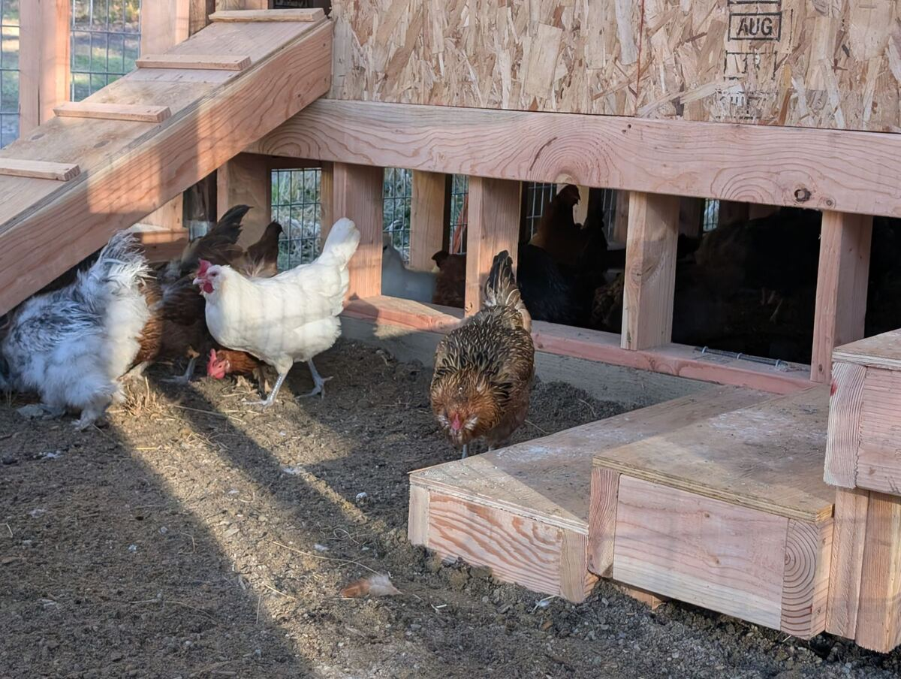
Farm-Fresh Eggs
Our mixed flock lives in a coop we built ourselves and spends the day scratching, dust-bathing and foraging. Every dozen is a mix of browns, creams, blues and greens.
Most of the year
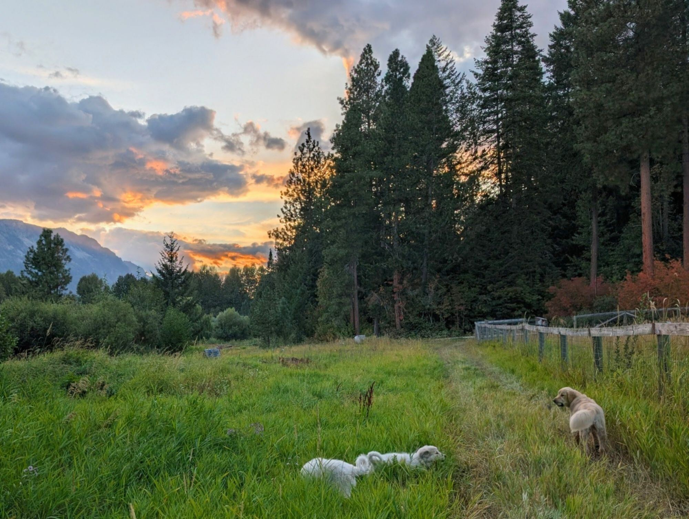
A small family homestead
Farm-fresh eggs, handmade soap, maple syrup, garden starts and pottery from our little corner of the Wenatchee River valley in Plain, Washington.
Our Farm
Willow Fen sits in a meadow at the foot of the mountains outside Plain, ringed by tall ponderosa pines and fir, with a big old weeping willow down by the low, wet ground that gave the place its name.
We're a small family operation, started in 2025. We tend a flock of laying hens and a happy little herd of goats, grow vegetable starts and a kitchen garden, cure bars of handmade soap, shape pottery, and in late winter we boil sap down into maple syrup. Our livestock guardian pups keep watch over all of it (when they aren't napping in the grass).
We farm the old-fashioned way: by hand, in small batches, and with a lot of care for the land and the animals. What we can't use ourselves, we bring to our neighbors.
— The Willow Fen family
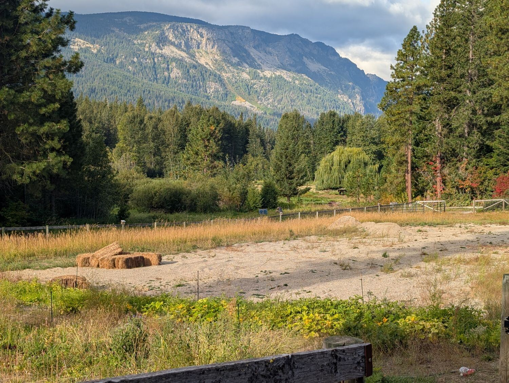
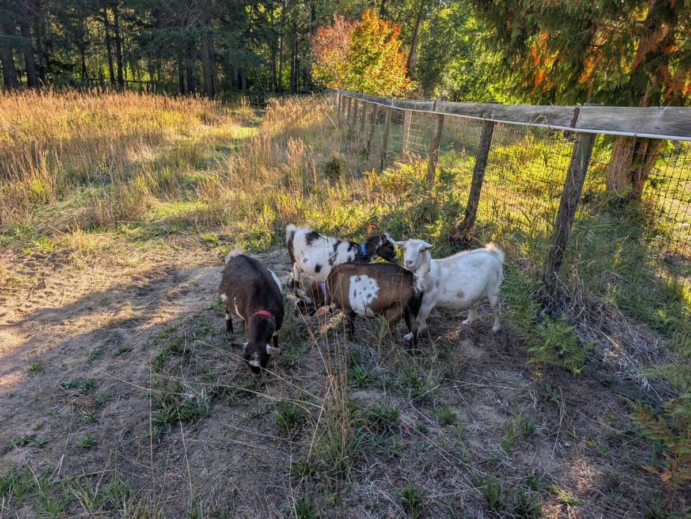
What We Raise
Everything is seasonal and in small quantities, so availability changes through the year.

Our mixed flock lives in a coop we built ourselves and spends the day scratching, dust-bathing and foraging. Every dozen is a mix of browns, creams, blues and greens.
Most of the year
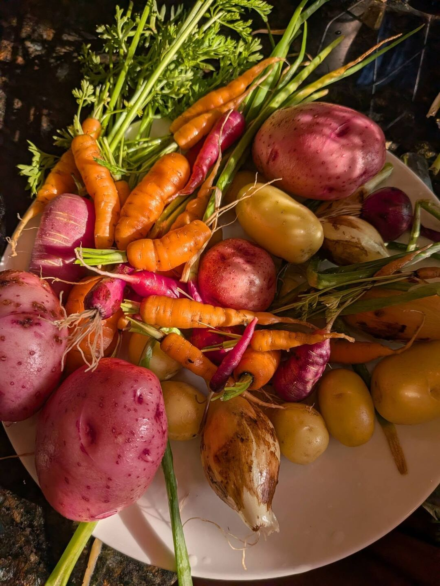
Straight from our beds: rainbow carrots, red and gold potatoes, radishes, onions and whatever else the short mountain season lets us coax out of the ground, picked fresh for market.
Summer & fall
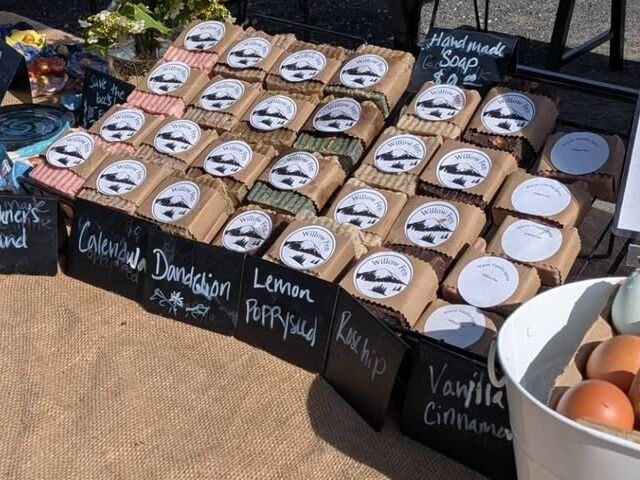
Small-batch bars, cured slowly and wrapped in kraft paper. Scents include Rose Geranium, Calendula, Dandelion, Lemon Poppyseed, Rosehip and Vanilla Cinnamon, plus a scrubby Gardener's Hand bar for after a day in the dirt.
Year-round
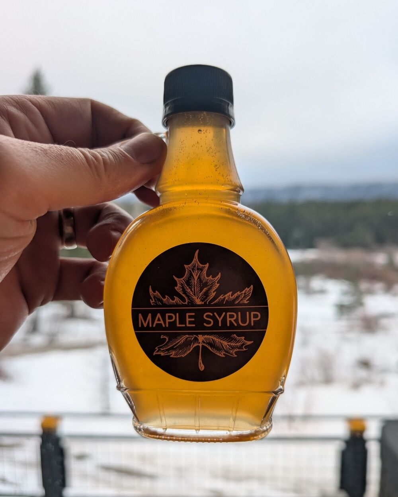
When the days warm and the nights still freeze, we tap trees and boil sap down over long, steamy days. It's a slow, small-batch labor of love, bottled right here on the farm.
Tapped late winter · while it lasts
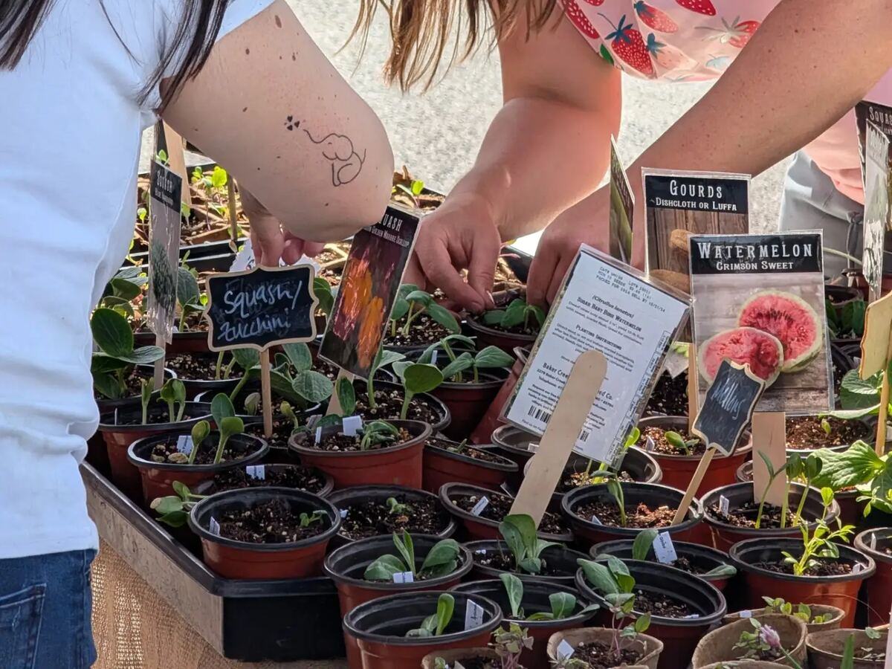
Healthy vegetable starts ready for your garden: squash and zucchini, melons, gourds and more, grown from seed and hardened off for our short mountain season.
Spring planting season
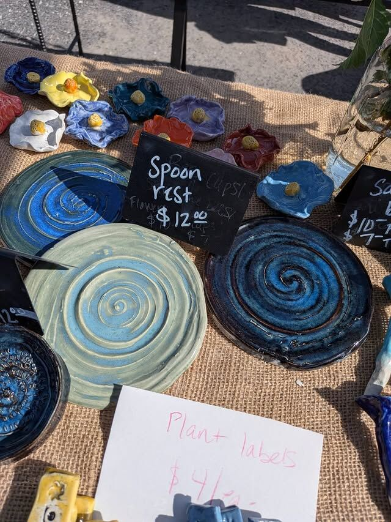
Handmade ceramics for the kitchen and garden: swirled spoon rests, little flower dishes and plant labels, each one a little different.
At the market booth
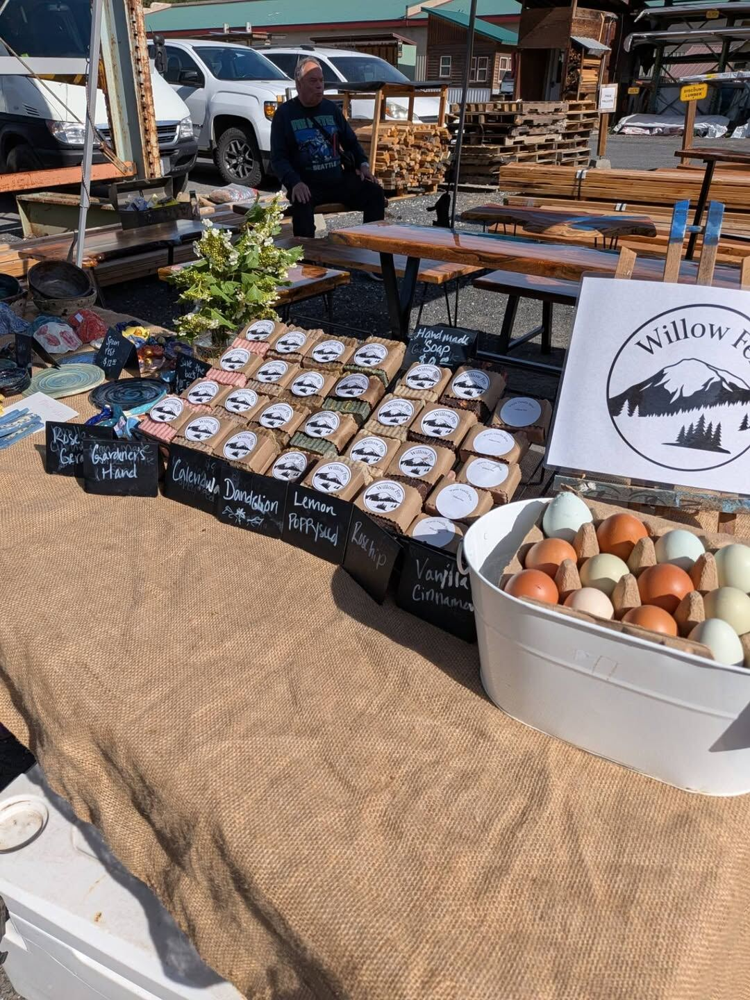
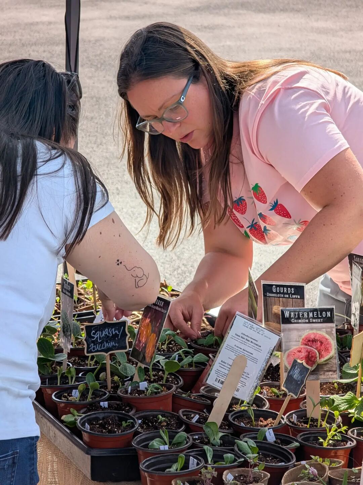
Come Say Hello
During the market season you'll find Willow Fen at the Plain Farmer's Market under the Willow Fen sign, with a table full of handmade soap, a tub of rainbow eggs, pottery, maple syrup and, in spring, trays of garden starts.
Come by the booth, ask about the animals, and say hi. We love talking shop with fellow growers and curious neighbors alike.
Get in Touch
Want to reserve eggs or syrup, ask a question, or just chat about homesteading? We'd love to hear from you.
Farm visits by appointment only — the goats appreciate a heads-up.